Accessibility design for Corner Store ERP
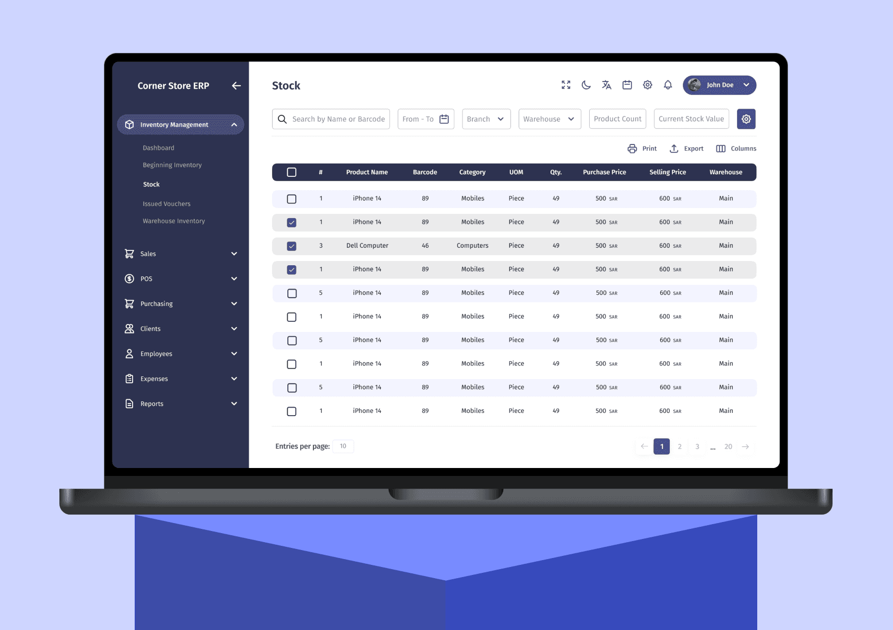
ERP users don’t visit screens; they live inside them.
Warehouse managers, store operators and finance teams spend hours navigating dense tables. In high-frequency environments, small friction becomes fatigue.
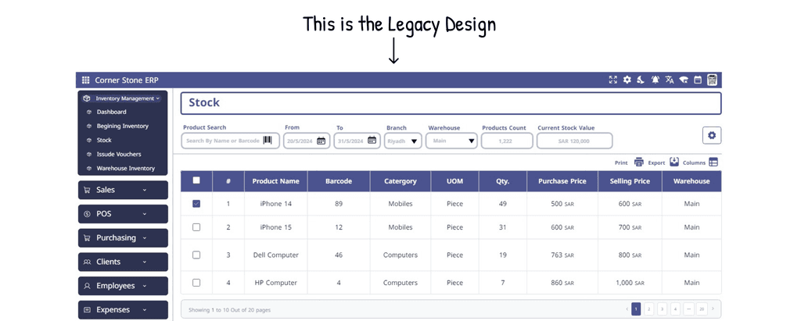
Built for efficiency, but not always for clarity
ERP systems are built for efficiency. We should always be mindful of how these solutions are used as well, to create a better solution for the user.
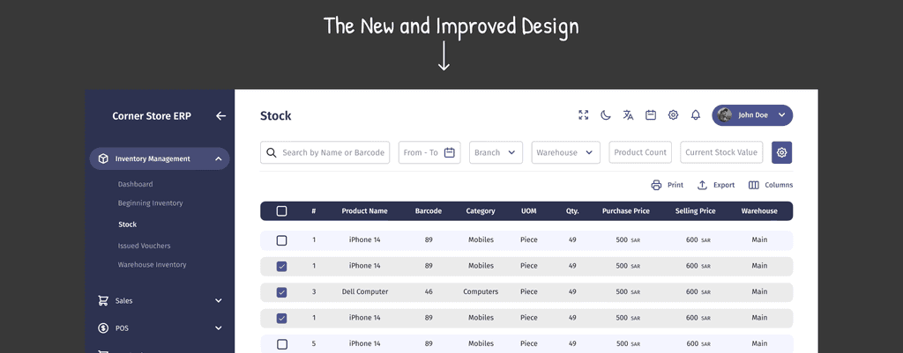
The problem
When I first saw this I was amazed how people had used it for so long with all these inconsistencies.
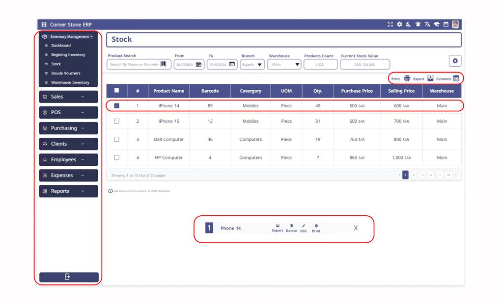
The issues I found
The original legacy module functioned, but it wasn’t optimised for accessibility or long-session usage.
Visual hierarchy issues
- Table headers blended with data rows.
- Weak separation between search and filter tools and table content.
- Low contrast between UI containers.
IMPACTUsers with visual impairments or cognitive overload struggled to scan information efficiently.
Small interaction targets
- Checkboxes were small and tightly spaced.
- Action icons (Print, Export, Delete) lacked sufficient padding.
- Pagination buttons were compact.
IMPACTMotor-impaired users and users on touch devices had difficulty interacting precisely.
Weak selection feedback
- Selected table rows blended in with unselected ones.
- No row segmentation.
IMPACTUsers may struggle to tell selected rows from unselected ones, which increases errors and slows tasks down.
Information density without segmentation
- Filters, totals and table were visually merged.
- No card segmentation.
- Stock value and product count were not emphasised.
IMPACTCognitive load increased. Harder for users with ADHD or dyslexia-type processing differences.
Inconsistent state indicators
- Selection state lacked strong visual feedback.
- Hover and focus states were subtle or unclear.
- No clear emphasis on the “Products selected” status.
IMPACTKeyboard and low-vision users could easily lose context.
Where it struggled
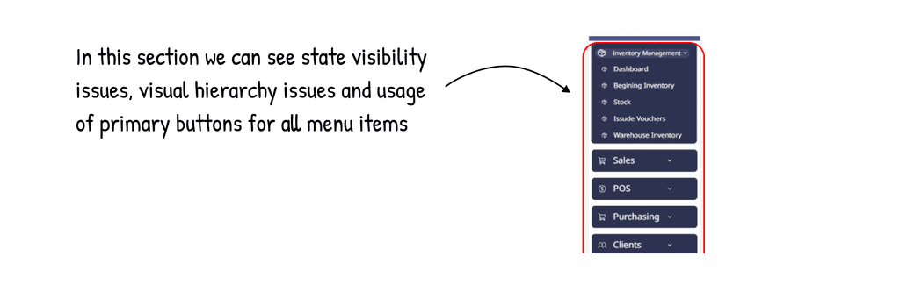
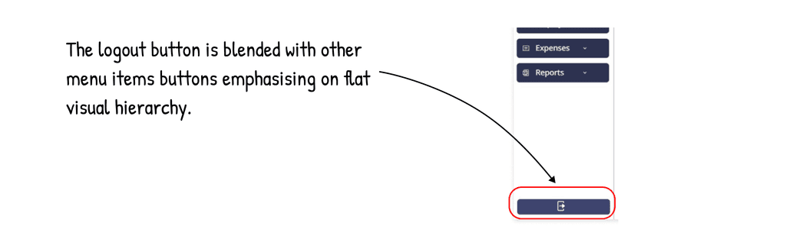
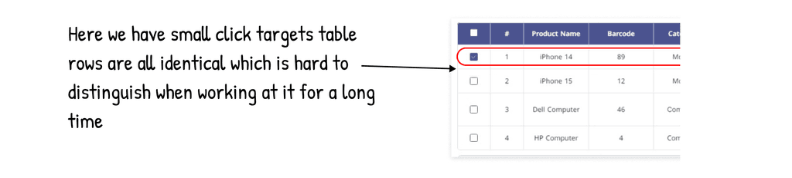
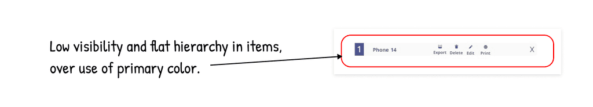
“By designing with accessibility in mind, we are designing for our friends, families and future selves.”
After recognising the issues, here is the final makeover.
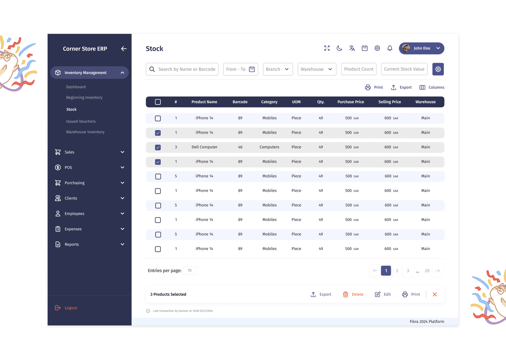
Improvement breakdown
This is what changed in the new design.
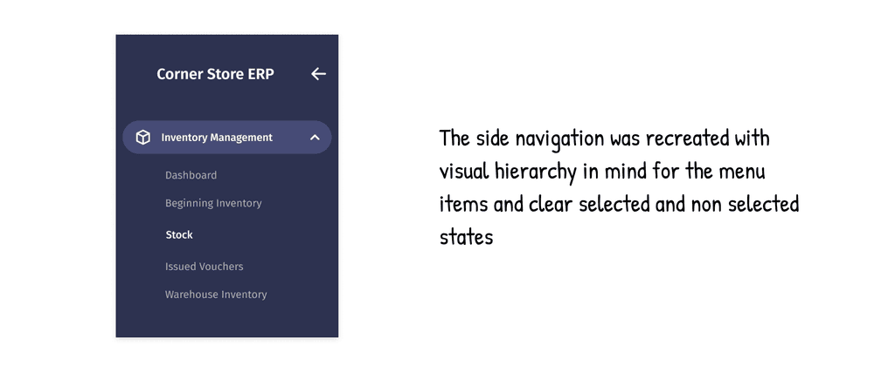
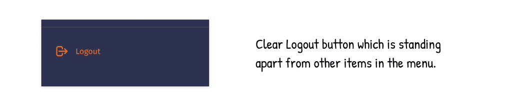
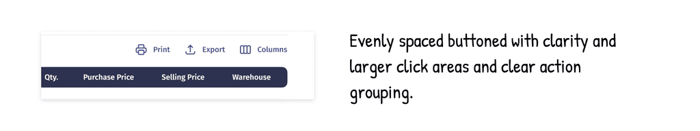
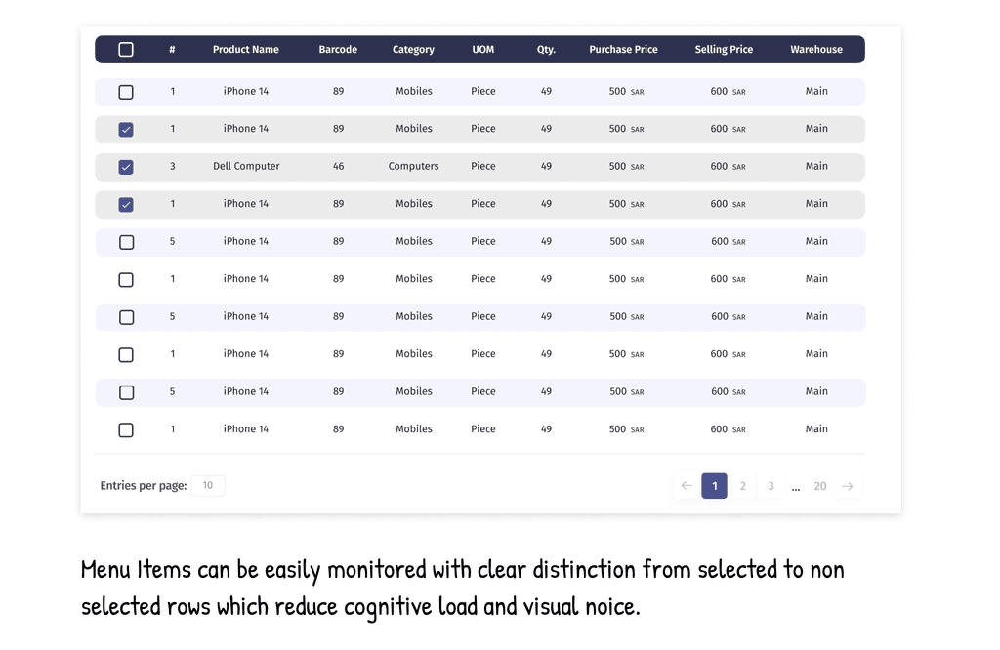
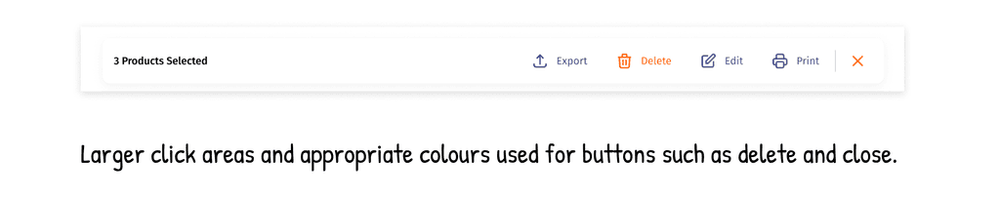
Before and after
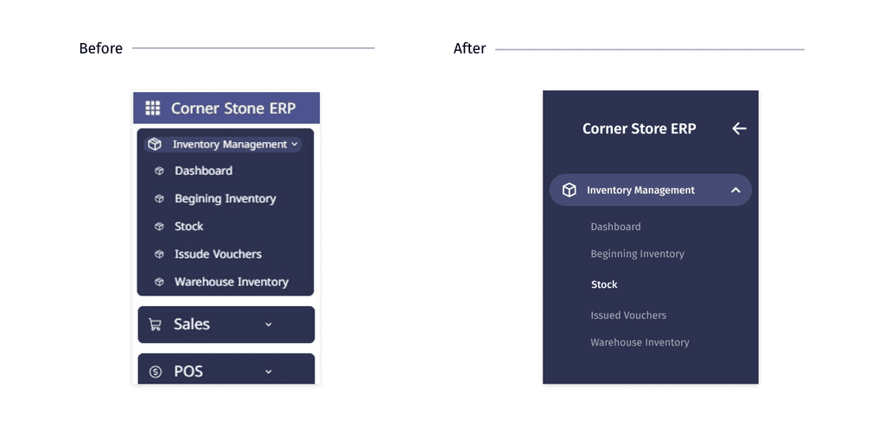
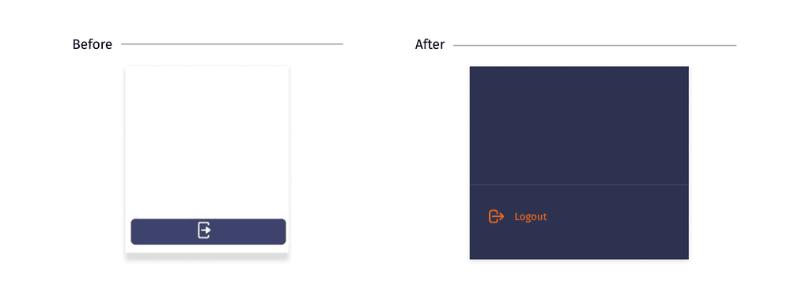
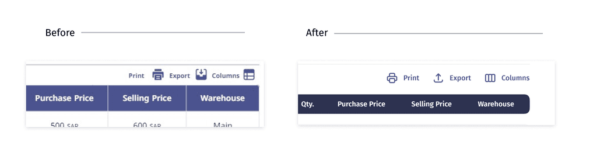
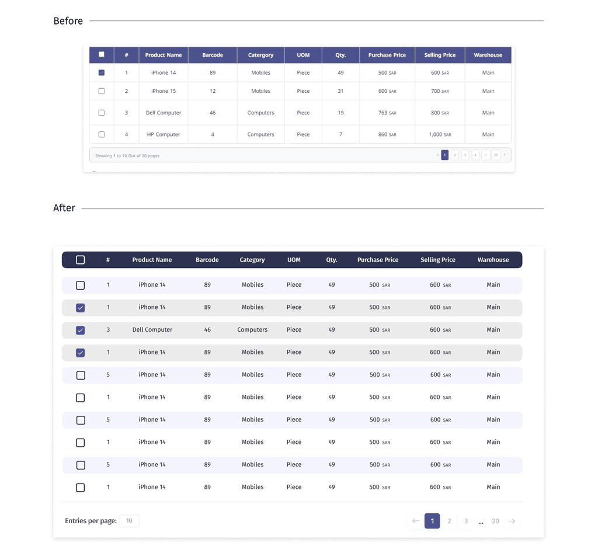
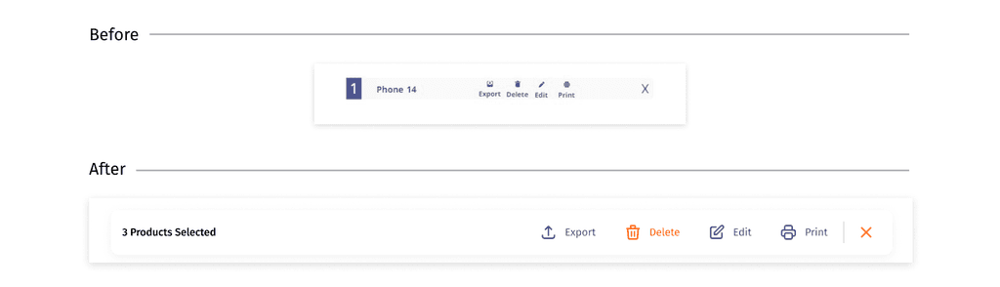
Project outcomes
- Faster table scanning
- Reduced selection errors
- Better long-session comfort
- Improved usability for diverse users
What I’d improve next
- Keyboard focus states
- ARIA labels
- High contrast mode
- Reduced motion support
Final reflections
“Accessibility is not simplification. It’s structured clarity under complexity.”
Working on this project made me aware of simple requirements that get neglected through a lack of empathy and awareness.
I worked on one section of this project, but I learned a lot about accessibility and about the problems we overlook when we aren’t looking for them.